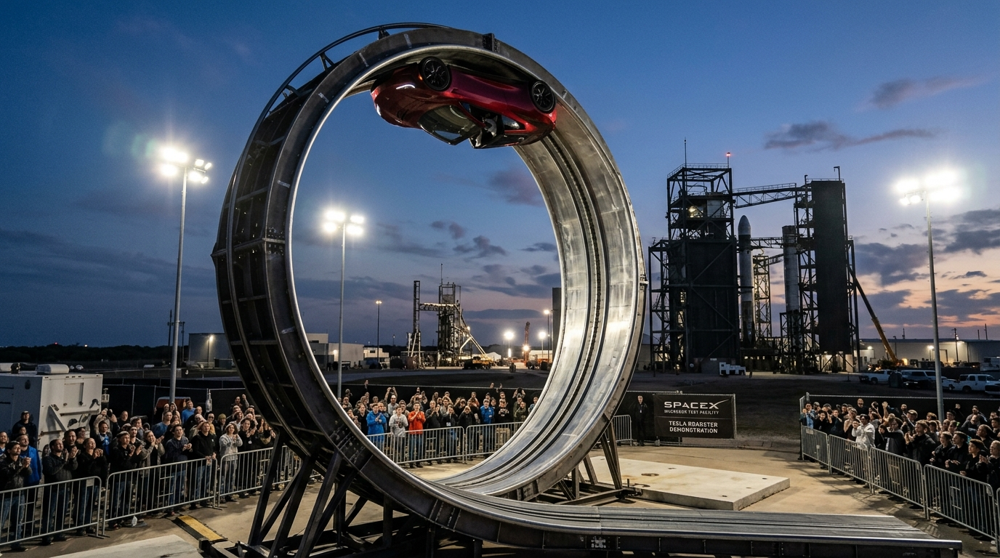
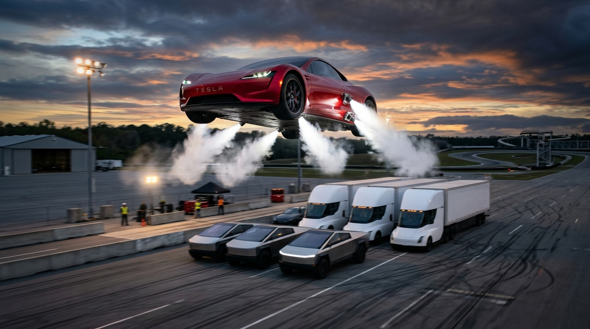
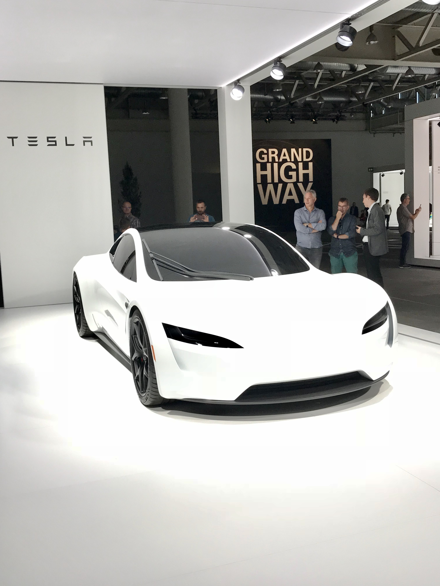

1. Màn trình diễn chấn động tại bãi thử McGregor, Texas
Sau nhiều năm chờ đợi kể từ bản concept 2017, ngày 15/10/2026, Elon Musk và đội ngũ kỹ sư Tesla - SpaceX đã tổ chức sự kiện lái thử thực tế tại cơ sở McGregor, Texas. Buổi trình diễn được truyền hình trực tiếp và lập tức gây bão toàn cầu khi chiếc Roadster nguyên mẫu không người lái (vận hành tự động hoàn toàn vì lý do an toàn tiếng ồn và gia tốc cực hạn) thực hiện chuỗi động tác chưa từng có trong lịch sử xe hơi.

Điểm nhấn đầu tiên khiến khán đài nín thở: chiếc xe lao vút lên đoạn dốc cong thép hình vòng cung. Thay vì rơi xuống đất theo trọng lực khi vượt qua góc vuông 90°, chiếc xe tiếp tục bám chặt vào bề mặt nghiêng tới 170° — nghĩa là treo ngược hoàn toàn lơ lửng trên không trung. Chiếc xe dừng lại 3 giây ở vị trí ngược để khán giả chứng kiến trước khi chuẩn bị cho cú diễn tiếp theo.
2. Bí mật vật lý: Hệ thống quạt hút lực ép cực đại (Fan-Suction System)
Làm thế nào một chiếc xe nặng gần 2 tấn có thể bám dính trên bề mặt dựng ngược như một chú thạch sùng?
Tesla đã ứng dụng nguyên lý ground-effect suction tương tự xe đua McMurtry Spéirling hay huyền thoại Brabham BT46B nhưng nâng lên đẳng cấp công nghiệp:
- Hệ thống quạt hút chân không đa tầng: Đặt ở phần gầm kín khít của xe, hút toàn bộ không khí bên dưới gầm và thổi ra ngoài qua các khe tản khí áp lực cao.
- Lực ép Downforce lên tới 2G: Lực hút này tạo ra áp suất âm khổng lồ, sản sinh lực ép lớn gấp đôi trọng lượng bản thân chiếc xe, đủ để xe thắng hoàn toàn lực hấp dẫn Trái Đất (1G) và bám chặt vào trần dốc.
- Điều khiển vi mô thời gian thực: Hệ thống cảm biến bề mặt tính toán khoảng hở gầm xe hàng nghìn lần mỗi giây để duy trì độ kín chân không ngay cả khi xe rung lắc.
— Elon Musk phát biểu tại McGregor
3. Cú phóng tên lửa và đáp đất hoàn hảo trên không trung
Sau khi buông khỏi đỉnh dốc, chiếc Roadster không rơi tự do mà kích hoạt hệ thống SpaceX Cold-Gas Thrusters.

Các đầu phun khí nén bố trí xung quanh thân xe lập tức khai hỏa các luồng khí nén siêu thanh với áp suất lên tới 10,000 PSI từ bình chứa composite COPV (công nghệ kế thừa trực tiếp từ hệ thống điều hướng phản lực RCS của tên lửa Falcon 9 và Starship).
Chiếc xe thực hiện cú bay lượn trên không, xoay trục thăng bằng (corkscrew), bay vượt qua hàng xe thử nghiệm bên dưới gồm Model 3, Cybertruck và đầu kéo Tesla Semi. Khi cách mặt đất vài mét, 4 cụm vòi phun thẳng đứng bên dưới đồng loạt phụt luồng khí nén cực mạnh, tạo lực hãm phanh khí động học, hãm vận tốc rơi về gần bằng 0 và hạ cánh êm ái trên cả 4 bánh trong tiếng vỗ tay cuồng nhiệt của khán giả.

4. Bảng thông số 3 phiên bản Tesla Roadster mới
Tại sự kiện, Tesla cũng công bố 3 phân hạng cấu hình sẽ chính thức đưa vào sản xuất tại siêu nhà máy Giga Texas vào năm 2028:
| Phiên bản | 0 - 100 km/h | Tốc độ tối đa | Trang bị đặc biệt | Mức đặt cọc |
|---|---|---|---|---|
| Performance (Tiêu chuẩn) | < 1.6 giây | > 400 km/h | Khí động học chủ động, quạt hút chân không gầm, 2 chỗ ngồi | 50,000 USD |
| Thrust (Gói Phản Lực) | 0.81 giây | > 400 km/h | Bổ sung cụm động cơ tên lửa khí lạnh phía sau, bứt tốc phá giới hạn ma sát lốp | 250,000 USD |
| Rocket (Phiên bản Giới hạn) | < 0.59 giây | > 370 km/h | 10 vòi phun khí lạnh chu vi 360°, hỗ trợ bay nhảy đoạn ngắn và hãm đáp (1 ghế lái) | Theo lời mời riêng |
5. Từ Meme vui "chạy trần hầm tránh kẹt xe" đến ranh giới công nghệ tương lai
Tấm ảnh chế xe Tesla đi trên trần đường hầm né dòng xe tắc nghẹt bên dưới từng là câu chuyện hài hước quen thuộc của cộng đồng mạng. Nhưng sự kiện ngày 15/10/2026 đã cho thấy ranh giới giữa khoa học viễn tưởng và kỹ thuật cơ khí đang dần bị xoá nhòa.
Dù việc cấp phép cho một chiếc xe phun khí nén 10,000 PSI chạy trên đường công cộng hay trần hầm giao thông thực tế tại Việt Nam vẫn còn là câu chuyện rất xa xôi của luật giao thông và hạ tầng, màn biểu diễn của Tesla Roadster đã chứng minh một điều: khi kết hợp tư duy hàng không vũ trụ vào cơ khí xe hơi, những giới hạn vật lý truyền thống của lốp xe và mặt đường hoàn toàn có thể bị phá vỡ.